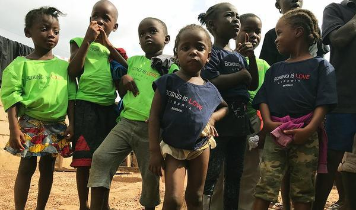

Mobilize a population of eager talented young people desperate for opportunity.
Boxing Is Love will inspire perseverance, determination, and the necessary hope to empower progress.
A country just 15 years removed from a two decade Civil War. The fighting caused the deaths of almost a million Liberians, and displaced roughly 750k as refugees. As a direct result, the nation of Liberia now has a population where 70% of the people are under the age of 25. With limited access to productive outlets and opportunity, Boxing will help to shift the mindsets of these children, and systematically change the trajectory of an entire generation.
Be a part of the Boxing Is Love Movement:
Connect. Communicate. Conquer. Change the world with what you love
Boxing is Love wants to establish a global network of individuals that share in the belief that boxing can and will create positive change.
The organization is seeking individuals motivated to promote the ideals of Boxing is Love.
As the program grows, as will the opportunities for;
Francis has his bachelor’s degree from The University of Guinea, however, due to limited opportunity in Liberia, he mainly works as help for the host family of Save More Kids. He was first introduced to Boxing in April 2018 and trains every day at 5am.
As a result of boxing, his confidence has increased and led him to pursue a part-time position as a tutor, with the goal of becoming a full time teacher.
“I am moving gradually, and promise I will discover new talents. I want to learn and be much more great.”